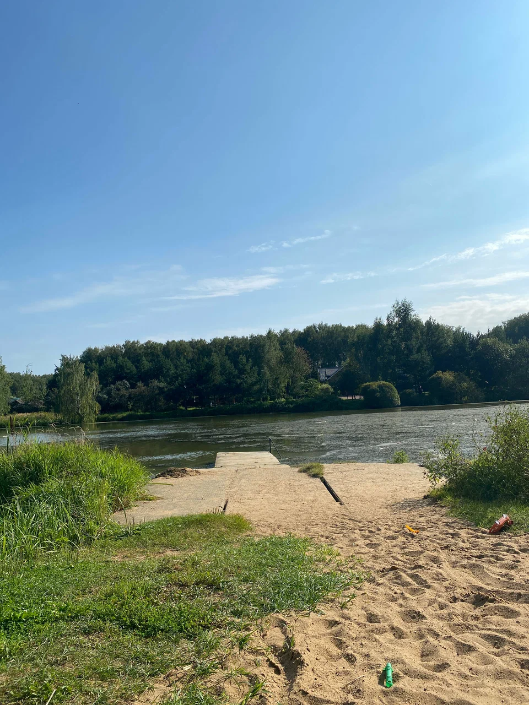

ТСН «Новое Вельяминово» — это товарищество собственников недвижимости, расположенное в Московской области, в городском округе Ступино, в селе Татариново. Оно зарегистрировано 18 августа 2020 года. Основной вид деятельности — управление эксплуатацией жилого фонда за вознаграждение или на договорной основе.
Посёлок находится примерно в 45–51 км от МКАД по Каширскому шоссе (трассе М4 «Дон»). Чтобы добраться на автомобиле, нужно проехать от Москвы по Каширскому шоссе в направлении села Растуново. После железнодорожного переезда села Барыбино — первый поворот направо, далее прямо до села Татариново. ТСН «Новое Вельяминово» расположено справа от дороги, между СНТ «Парижская Коммуна» и СНТ «Калининец».
На общественном транспорте можно доехать электричкой Павелецкого направления от железнодорожной станции «Нижние Котлы» (м. «Нагатинская») до платформы «Вельяминово». До железнодорожной станции «Вельяминово» можно дойти пешком примерно за 10 минут.
В пешей доступности от посёлка есть магазины («Пятёрочка», «Дикси»), строительный рынок, школа, детский сад, аптека, поликлиника, пункты выдачи Wildberries и Ozon. Также рядом есть конно-спортивный комплекс «Рэймонд».
В посёлке есть дороги с твёрдым покрытием, дренажная система, пожарный водоём.
Посёлок расположен в экологически благоприятной зоне — граничит с лесным массивом и естественными водоёмами. Рядом есть смешанный лес, реки и пруды, что предоставляет возможности для прогулок, сбора грибов и ягод, рыбалки.
В ТСН «Новое Вельяминово» подведены электричество и газ. На участках может быть предусмотрено водоснабжение (например, скважина или колодец), канализация (септик).
Председатель правления с 30 июля 2024 года — Чупина Анна Константиновна. Юридический адрес: 142846, Московская область, г. о. Ступино, с. Татариново, тер. ТСН «Новое Вельяминово», ул. Солнечная, д. 39.
Территория посёлка закрыта, есть несколько въездов. Сообщество характеризуется как спокойное, с добрососедскими отношениями.